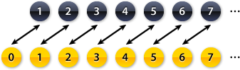
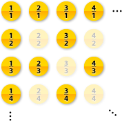

Introduction

David Hilbert (1862–1943)
Infinity is without doubt one of the hardest mathematical concepts to understand. Many ideas that we find intuitive when working with normal numbers don’t work anymore, and instead there are countless apparent paradoxes. Is there a largest number? Is there anything bigger than infinity? What is infinity plus one? What is infinity plus infinity?
The symbol for infinity is ∞, a horizontal 8. It was invented by John Wallis (1616–1703) who could have derived it from the Roman numeral M for 1000. But one thing we know for certain: infinity is a lot bigger than 1000.
The German mathematician David Hilbert (1862–1943) tried to explain some of the properties of infinity using a hotel with infinitely many rooms. Hilbert is also well-known for presenting a list of 23 mathematical problems which he considered the most important ones at the start of the 20th century. Some of these problems, like the Riemann Hypothesis, are still unsolved.
Hibert’s Hotel
The Hilbert is the largest hotel in the world: it has infinitely many rooms. We could imagine that it consists of just a single, never-ending corridor, with the rooms numbered 1, 2, 3, 4 and so on. On the day we arrive at the Hilbert, every single room in the Hotel is full. (Business is going very well indeed…)
In any other Hotel, the reception would have to turn us away: if all the rooms are full there simply isn’t space for us. Very surprisingly, this is not the case in the Hilbert…
Once we arrive and ask for a room, the hotel makes a loudspeaker announcement that can be heard everywhere in the hotel: they ask all their guests to move up into the next room. Now the guest in room 1 moves into room 2, the guest in room 2 moves into room 3, and the guest in any room n moves into room n + 1. Since there is no last room in the hotel, every guest will get a new room.
Audio Recording © Adam Cuerden and Jujutacular (James Scott's Frog Legs Rag)
Now the first room is empty, and we can move in. Of course this wouldn’t have worked in any finite hotel. We could still ask all guests to move up into the next room, but the person in the last room would be left without a room. The Hilbert doesn’t have a last room, and infinity plus one is still infinity.
This idea can be extended: If 10 new guests arrive, the reception just asks all guests to move up 10 rooms. If 100 new guests arrive, all current guests have to move up 100 rooms – and similarly for any other number. Thus even if the hotel is full it can still offer rooms to any number of new guests!
On this ship, there are only finitely many rooms – therefore, if somebody new arrives, one officer is left without room. This wouldn't have happened on an infinite ship!
Extract from 'Murder Ahoy!', based on the Miss Marple stories by Agatha Christie
© 1964 and 1989 Turner Entertainment Co.
Let us suppose that the hotel is full again, and that infinitely many new guests arrive. Now the previous method won’t work anymore: you can’t ask the guests to move up infinitely many rooms – they would never arrive in their new room.
Instead the hotel does something very clever: they ask their guests to move into the room with twice the number of their current room. Thus the guest in room 1 will move into room 2, the guest in room 2 will move into room 4, and so on. The guest in room n will move into room 2n.
Notice that now all the odd numbered rooms are empty. Since there are infinitely many odd numbers, there is enough space for the infinitely many new guests. Infinity plus infinity is still infinity.
An infinite bus arrives at the Hilbert. The hotel is completely full, yet everybody gets a room.
Finally let us suppose that a whole bus company arrives at the hotel: they have infinitely many buses, each with infinitely many seats. Can we also move all those infinitely times infinitely many passengers into one hotel?
It turns out that we can, using a simple rule: the passenger sitting on seat number i in bus number j gets room 2i 3j in the hotel. Here i and j can be any numbers, for example the passenger on seat 5 in bus 2 gets room 25 32 = 32 × 9 = 288.
Of course we have to check that we don't happen to give two passengers the same room. This is because 2 and 3 are prime numbers and because prime factorisation is unique – meaning that if two numbers are different, they have a different prime factorisation. But 2i 3j is the prime factorisation of the room numbers we assign to the customers, so different passengers will always get a different room.
In addition, all rooms which have prime factors other than 2 and 3, for example rooms 5, 7, 10, and so on, remain empty. As we walk down the infinite hotel corridor, only very few of the rooms will be used. This is useful in case an infinite bus arrives in the middle of the night and you don’t want to wake everybody up.
Countability

If we want to go even further, stretching our imagination and the meaning of infinity, we can’t use hotels. We have to develop a new language to express our ideas. This language is called Set Theory.
A set is simply a collection of any objects – fruit, buildings, or numbers – often written inside {} brackets. We say that two sets have the same size if we can pair up their elements so that no element is left out or connected to two elements. Such a pairing is called a bijection.
This applies to finite sets as well as infinite sets, and we say that a set is countable if it can be paired up with the natural numbers  = {1, 2, 3, 4, 5, …}. In that case, we can write down all elements in a numbered list.
= {1, 2, 3, 4, 5, …}. In that case, we can write down all elements in a numbered list.
For example, we can add one more number to  , say 0, and see whether we can pair up the two sets:
, say 0, and see whether we can pair up the two sets:

Since the black and the yellow set can be paired up without gaps or overlaps, they must have the same size. Infinity plus one is still infinity. This is precisely the same principle as in Hilbert’s Hotel above, where we paired up the infinitely many room numbers with the infinitely many guests.
We can do even better: let us try to pair up the positive integers  = {1, 2, 3, 4, 5, …} with all integers (these are written as
= {1, 2, 3, 4, 5, …} with all integers (these are written as  = {…,–3 ,–2, –1, 0, 1, 2, 3, …}). Now we have to jump back and forth between the positive and negative ends of the number line, as shown by this animation:
= {…,–3 ,–2, –1, 0, 1, 2, 3, …}). Now we have to jump back and forth between the positive and negative ends of the number line, as shown by this animation:
Infinity plus infinity is still infinity, and it seems that there are as many positive integers as there are integers in total.
We can even try to pair up the positive integers  with the positive rational numbers
with the positive rational numbers  . Rational numbers are all fractions, such as 1/2, 7/40, 13/17 and so on. To do this, we first write down all fractions in an infinite grid where the columns are the numerators and rows the denominator. Some fractions appear several times: 1/2, for example, is the same as 2/4 or 3/6 and so. Therefore we delete all the duplicates and only keep the smallest version:
. Rational numbers are all fractions, such as 1/2, 7/40, 13/17 and so on. To do this, we first write down all fractions in an infinite grid where the columns are the numerators and rows the denominator. Some fractions appear several times: 1/2, for example, is the same as 2/4 or 3/6 and so. Therefore we delete all the duplicates and only keep the smallest version:

Now we follow a path through this square, and every time we see a valid rational number, we pair it up with the next integer:
And this is really quite surprising: remember that there are infinitely many rational numbers between 0 and 1. (Actually, there are infinitely many rationals between any two distinct numbers, no matter how close they are.) But since we can pair up all these rationals with the natural numbers, there must be the same number. Infinity times infinity is still infinity.
Cantor’s Diagonal
It now seems quite likely that we must be able to pair up any number set with the natural numbers, but this is not the case. One example are the real numbers  , which include all the fractions but also numbers like Pi, e or √2. Of course there are infinitely many real numbers, but this infinity is of a “bigger kind” than before, and we say that the real numbers are uncountable.
, which include all the fractions but also numbers like Pi, e or √2. Of course there are infinitely many real numbers, but this infinity is of a “bigger kind” than before, and we say that the real numbers are uncountable.
To prove that the real numbers can’t be paired up with the natural numbers, we use proof by contradiction. We start by assuming that the real numbers were countable. Then we deduce something we know is wrong: a contradiction. This means that our initial assumptions must have been wrong, i.e. that the real numbers are not countable.
All real numbers can be expressed as a decimal. The decimal expansion could go on forever, like 0.3333333…, or stop, in which case we can add 0s like in 0.12300000… Let us suppose that the real numbers were countable. Then we could write down all real numbers in a list. Below, every row is a new number, and the columns are the decimal expansions of the numbers:
| x1 | . | x11 | x12 | x13 | x14 | x15 | … |
| x2 | . | x21 | x22 | x23 | x24 | x25 | … |
| x3 | . | x31 | x32 | x33 | x34 | x35 | … |
| x4 | . | x41 | x42 | x43 | x44 | x45 | … |
| … |
We now construct a new number consisting of all the elements along the diagonal:
| 0 | . | x11 | x22 | x33 | x44 | x55 | … |
Now we change all the digits in this new number. For example, we could make every digit a 1, except the 1s, which become 2s:
| 0 | . | y11 | y22 | y33 | y44 | y55 | … |
This is again a real number. Notice, however, that it is not in our list of all real numbers above: it can't be the first number, since the x11 digit doesn’t match. It can't be the second number since the x22 digit doesn't match. And so on – 0.y11y22y33… is a completely new real number not in our initial list.
But this is a contradiction, since we started by assuming that all real numbers were in our list. Therefore this assumption must have been wrong, so we can't write down all real numbers in a list. Therefore the real numbers are not countable. They are a bigger kind of infinity.
The Continuum Hypothesis

Georg Cantor (1845–1918)
Georg Cantor (1845–1918) was the first mathematician to realise that there are different kinds, different sizes of infinity. He called these different sizes cardinalities. Cantor viewed his mathematical discoveries in a very philosophical way and believed that his study of infinity could explain the absolute infinity of God. During his life, his research was dismissed as ‘shocking’ and ‘corrupting’, but it is fundamental to modern mathematical logic.
We have shown above that  ,
,  and
and  all have the same cardinality, which is called Aleph 0 and written as ℵ0 (Aleph is the Hebrew letter A). We have also shown that the real numbers
all have the same cardinality, which is called Aleph 0 and written as ℵ0 (Aleph is the Hebrew letter A). We have also shown that the real numbers  have a bigger cardinality.
have a bigger cardinality.
One question which Georg Cantor asked is whether the cardinality of  is the next bigger cardinality after ℵ0 (in the same way that 1 is the next bigger integer after 0). This is called the Continuum Hypothesis. Cantor spent many years of his life trying to prove it – but he was unsuccessful.
is the next bigger cardinality after ℵ0 (in the same way that 1 is the next bigger integer after 0). This is called the Continuum Hypothesis. Cantor spent many years of his life trying to prove it – but he was unsuccessful.
Only much later, in 1963, mathematicians discovered something very curious: The continuum hypothesis could be true or false, and it is impossible to prove it either way. It basically means that you can decide for yourself whether you want it to be true or not. The existence of unprovable statements like the continuum hypothesis was discovered by Kurt Gödel.